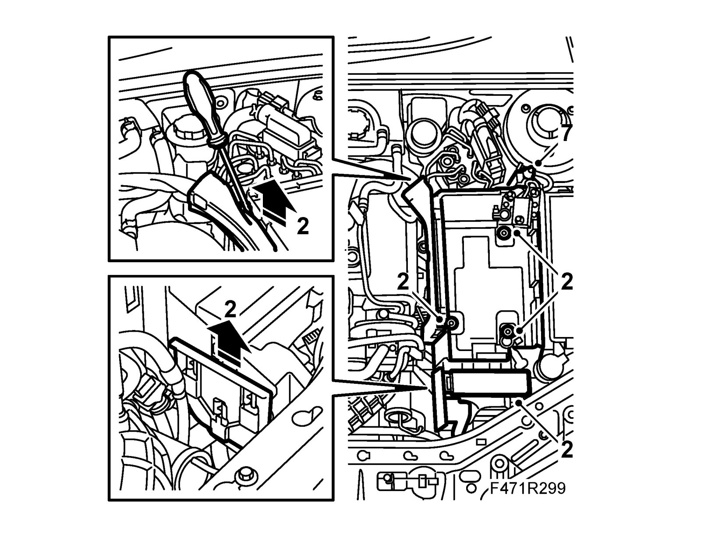
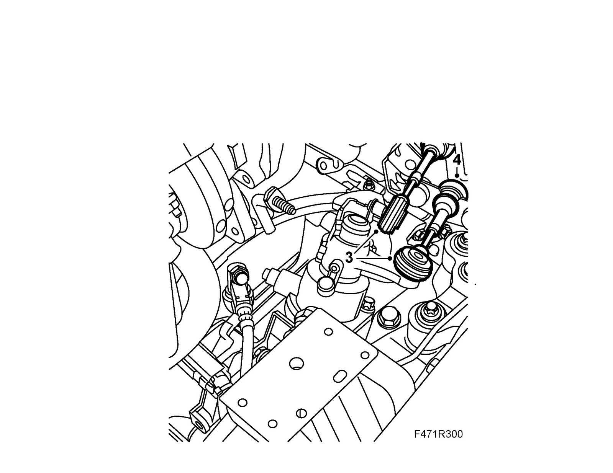
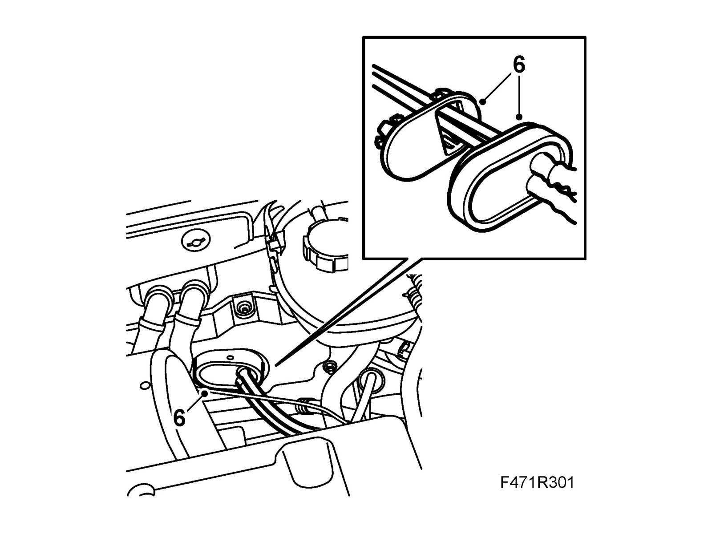
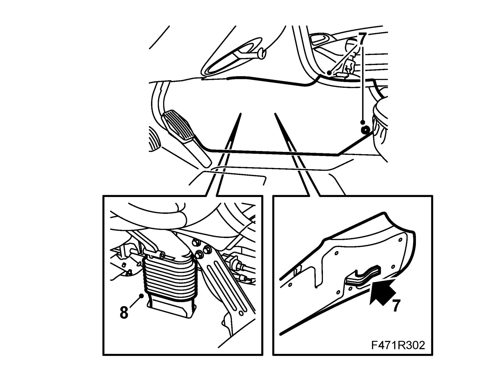
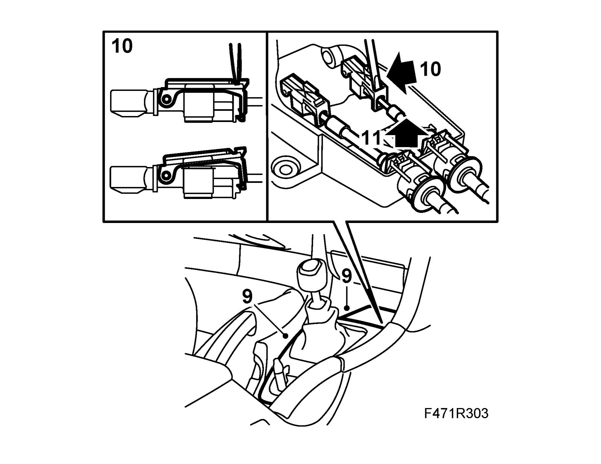
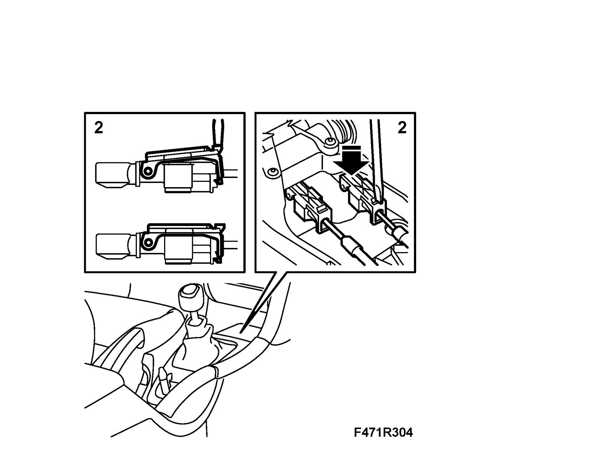
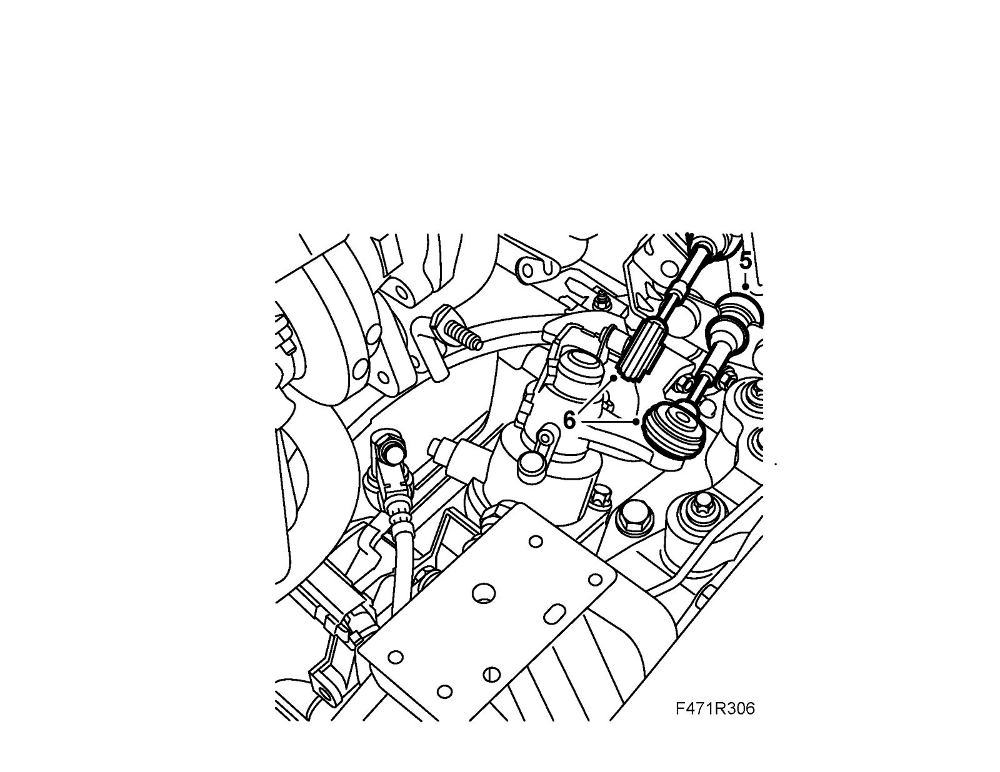
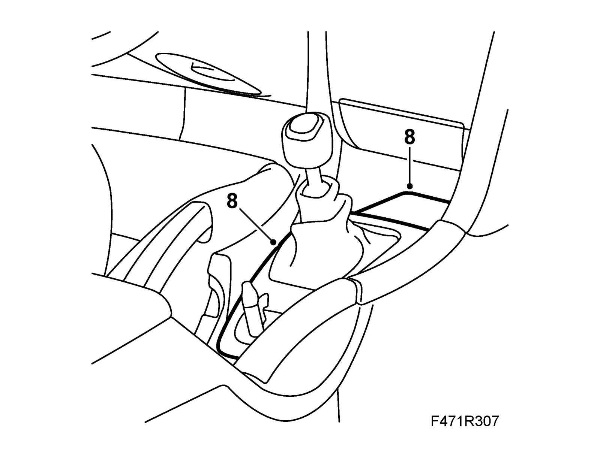
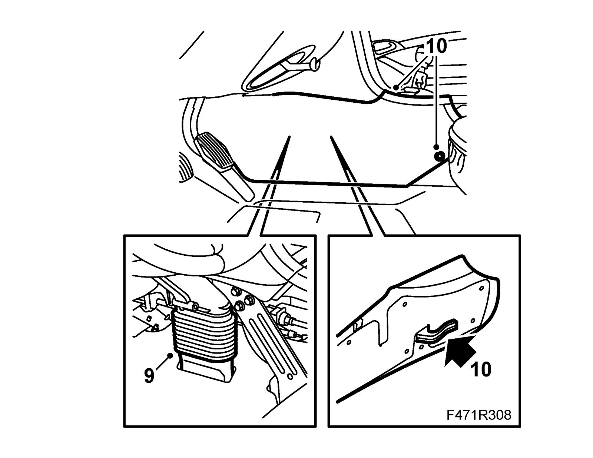
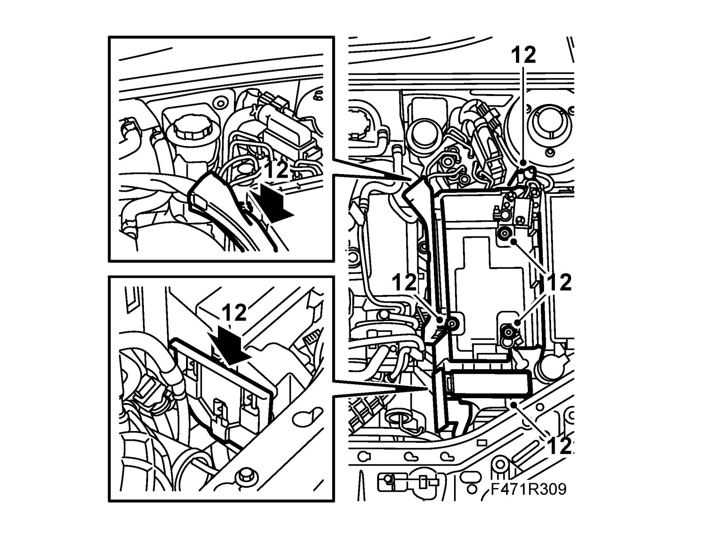

Gear Cable
Gear cableTo remove
1. Put the gear lever in neutral.
2. V6: Remove the battery and the battery tray.

3. Lift the cable connections from the selector arms on the gearbox.

4. Detach the cables from the cable retainers on the gearbox by pulling back the locking sleeves.
5. V6: Raise the car
6. Loosen the rubber seal in the bulkhead wall and then the plastic grommet. V6: Lower the car.

7. Remove the center console left-hand front side panel.

8. Remove the gaiter for the air duct.
9. Undo the plastic cover for the gear lever and the rubber mat in the storage compartment and fold up. Use 82 93 474 Removal tool.

10. Loosen the cable adjusters in the gear lever housing with a screwdriver. Press down the blade carefully with a screwdriver in the cable adjuster and pry slightly towards the gear lever. A click will be heard when the adjuster catch has engaged. Repeat the procedure on the other side of the cable adjuster.
Important
Ensure that the wire adjustment is not damaged.
11. Press the catches and detach the cable sheaths from the gear lever housing. Lift the air duct slightly with a large screwdriver when the detaching the cable sheaths.
12. Pull out the cables through the engine bay.
To fit
1. Insert the cable through the engine bay.
2. Attach the cable sheaths and cables to the gear lever housing. Fit the black and white cables on the black and white adjusters respectively.

3. V6: Raise the car.
4. Fit the plastic grommet into the bulkhead wall and the rubber seal. V6: Lower the car.
5. Fit the cables to the cable retainers on the gearbox by pulling back the locking sleeves. (White to lower retainer and black to upper one)
6. Attach the cable connections to the selector arms.

7. Adjust the gear change 6-speed: Gear cable adjustment. Adjustments
8. Fit the plastic cover for the gear lever and the rubber mat in the storage compartment.

9. Fit the gaiter for the air duct.

10. Fit the center console left-hand front side panel.
11. Check the shifting positions.
12. V6: Fit the battery tray.

13. V6: Fit the battery.
14. V6: Carry out Measures after disconnecting the battery.